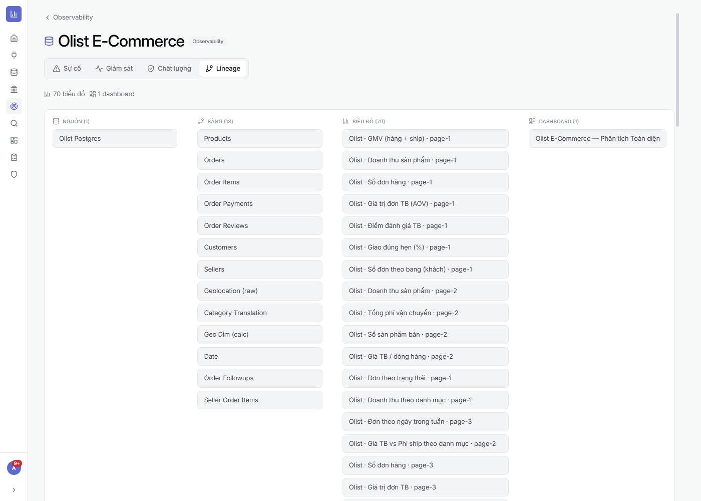

⚙️ Đang phát triển: Observability là module mới, vẫn đang hoàn thiện — một số monitor còn ở mức khởi tạo; giao diện có thể thay đổi.
7.1Tổng quan sức khoẻ dữ liệu
Vùng này để làm gì: một bảng điều khiển cho biết toàn bộ dataset đang “khoẻ” hay có vấn đề, để đội dữ liệu xử lý trước khi người xem báo cáo bị ảnh hưởng.
- Chỉ số vận hành đầu trang: số dataset đang giám sát · sự cố đang mở · MTTR (thời gian khắc phục trung bình) · số đã xử lý.
- Bảng dataset: mỗi dòng hiện sự cố mở, số monitor, mức tiêu thụ (số biểu đồ/dòng dùng), lần làm mới gần nhất.
- Lọc nhanh: “Chỉ dataset có sự cố”, hoặc theo trụ cột (Độ tươi/Khối lượng/Lược đồ/Phân phối/Chất lượng).
⚙ Cách làm
- Mở Observability ở thanh điều hướng.
- Bấm “Quét ngay” để chấm lại sức khoẻ; hoặc “Kênh cảnh báo” để cấu hình nơi nhận cảnh báo (khi có sự cố).
- Dùng bộ lọc để tìm dataset cần chú ý, rồi bấm vào dataset đó để xem chi tiết.

7.2Chi tiết một dataset — Sự cố · Giám sát · Chất lượng · Lineage
Vùng này để làm gì: bấm vào một dataset để mở trang chi tiết với 4 tab, xử lý mọi thứ ngay tại chỗ:
- Sự cố: danh sách sự cố (lọc Đang mở/Tất cả, mức Nghiêm trọng/Cảnh báo/Thông tin). “Mọi monitor đều khoẻ” = không có sự cố.
- Giám sát: các monitor đang chạy trên dataset.
- Chất lượng: điểm chất lượng theo các chiều (liên thông với rule chất lượng ở Dataset — mục 2.8).
- Lineage: sơ đồ nguồn gốc dữ liệu: Nguồn → Bảng → Biểu đồ → Dashboard — biết một dataset đang “nuôi” những báo cáo nào (đánh giá tác động khi có sự cố).
⚙ Cách làm
- Ở danh sách, bấm một dataset để vào trang chi tiết.
- Chuyển tab Sự cố / Giám sát / Chất lượng / Lineage tuỳ nhu cầu.
- Mở tab Lineage để xem dataset này đang cấp dữ liệu cho biểu đồ/dashboard nào.

🔗 Kết hợp với các module khác